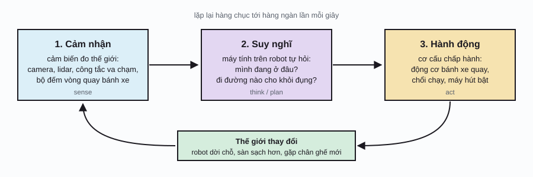
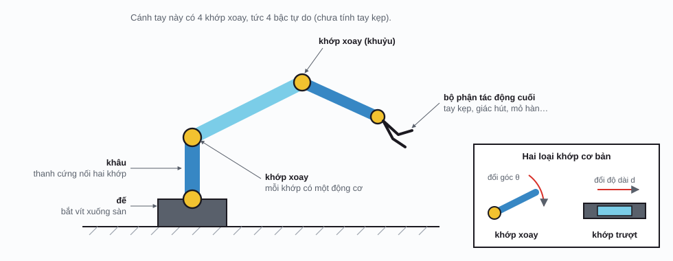
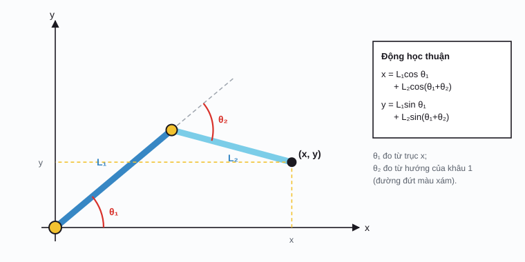

Robotics / Phần 1
Robot cử động ra sao
Bạn muốn cánh tay robot gắp ly cà phê trên bàn. Nghe thì dễ, nhưng robot hổng hiểu “gắp ly”; nó chỉ biết quay từng động cơ một góc bao nhiêu độ. Trang này kể từ đầu: robot là gì, cánh tay robot ráp từ những gì, và làm sao đổi qua đổi lại giữa góc của các khớp với vị trí của bàn tay, chuyện mà dân robot gọi là động học.
Robot là gì?
Hổng có định nghĩa nào ai cũng chịu, nhưng cách hiểu dễ xài nhất là: robot là cái máy tự cảm nhận thế giới, tự quyết định, rồi tự hành động lên thế giới. Cái máy giặt chạy theo chương trình cố định thì chưa tới; con robot hút bụi biết né chân ghế, biết quay về sạc khi hết pin thì đúng là robot.
Mọi robot, từ con hút bụi trong nhà, cánh tay hàn sườn xe hơi, xe tự lái, tới drone giao hàng, đều chạy một vòng lặp ba bước:

Khớp, khâu và bậc tự do
Coi cánh tay của chính mình: xương cánh tay, xương cẳng tay là những đoạn cứng; vai, khuỷu, cổ tay là chỗ gập được. Cánh tay robot cũng y vậy. Đoạn cứng gọi là khâu (link), chỗ gập gọi là khớp (joint). Mỗi khớp thường có một động cơ điện riêng, gắn hộp số để quay chậm mà mạnh. Động cơ và những thứ làm robot cử động nói chung gọi là cơ cấu chấp hành (actuator).
Hai loại khớp hay gặp nhất là khớp xoay (revolute joint), đổi một góc như bản lề cửa, và khớp trượt (prismatic joint), đổi một độ dài như ngăn kéo. Món gắn ở cuối cánh tay, như tay kẹp, giác hút hay mỏ hàn, gọi là bộ phận tác động cuối (end effector), nói gọn là “bàn tay”.

Bậc tự do (degrees of freedom, DOF) là số con số độc lập cần biết để tả hết tư thế của robot. Với cánh tay nối tiếp, mỗi khớp góp một bậc, nên đếm khớp là ra. Vì sao cánh tay công nghiệp hay có đúng 6 bậc? Vì muốn đặt một món đồ ở chỗ bất kỳ trong không gian, phải chọn được 3 con số cho vị trí (trước sau, trái phải, lên xuống) và 3 con số cho hướng (cúi ngửa, nghiêng trái phải, xoay). Ít hơn 6 thì có những tư thế bó tay; nhiều hơn 6, như tay người cỡ 7 bậc từ vai tới cổ tay, thì dư ra để né vật cản hay đổi kiểu cầm.
Hệ tọa độ: nói cho robot biết “chỗ đó” là chỗ nào
Nói với người: “để cái ly kế bên laptop”. Nói với robot: phải ra số. Người ta chọn một điểm gốc (thường là chân đế robot), vẽ ba trục vuông góc x, y, z, rồi mọi vị trí đều thành ba con số. Đó là hệ tọa độ (coordinate frame).
Cái khó là robot có nhiều hệ tọa độ cùng lúc: một cái gắn với đế, một cái gắn với camera, một cái gắn với bàn tay, mỗi khâu một cái. Camera thấy cái ly “cách tui 40 phân, lệch trái 5 phân”, nhưng động cơ cần biết cái ly nằm đâu so với đế. Đổi tọa độ từ hệ này qua hệ kia gồm hai bước: xoay cho các trục trùng hướng, rồi dời gốc. Trên mặt phẳng, xoay một điểm (x, y) quanh gốc một góc θ là:
θ (theta): góc xoay, chiều dương là ngược chiều kim đồng hồ; bảng 2×2 ở giữa là ma trận xoay (rotation matrix). Nhân ma trận với cột (x, y) nghĩa là: x′ = x cos θ − y sin θ, y′ = x sin θ + y cos θ. Trong không gian 3 chiều thì ma trận xoay cỡ 3×3, và người ta gộp luôn bước dời vô một ma trận 4×4 cho gọn.
Cánh tay robot thực chất là một chuỗi phép “xoay rồi dời”: từ đế qua khâu 1, từ khâu 1 qua khâu 2, cứ vậy tới bàn tay. Năm 1955, Denavit và Hartenberg đề ra cách tả mỗi chặng chỉ bằng 4 con số, tới giờ vẫn là chuẩn trong sách giáo khoa và phần mềm robot.
Động học thuận: biết góc, tìm vị trí
Câu hỏi dễ trước: cho biết góc của từng khớp, bàn tay đang ở đâu? Bài này gọi là động học thuận (forward kinematics). “Động học” nghĩa là chỉ lo hình học của chuyển động, chưa tính lực hay khối lượng.
Để dễ thấy, mình xài cánh tay hai khâu nằm trên mặt bàn, nhìn từ trên xuống, giống mấy con robot SCARA gắp linh kiện điện tử trong nhà máy. Đi từ đế: khâu 1 dài \(L_1\) chĩa theo góc \(\theta_1\); tới khuỷu, khâu 2 dài \(L_2\) bẻ thêm một góc \(\theta_2\) so với hướng của khâu 1. Cộng hai đoạn lại là ra vị trí bàn tay.

L1, L2: độ dài hai khâu; θ1, θ2: góc hai khớp; cos, sin: hàm lượng giác, cho biết một đoạn dài 1 chĩa theo góc θ thì đi ngang bao nhiêu (cos θ) và đi dọc bao nhiêu (sin θ); (x, y): vị trí bàn tay so với đế.
Động học thuận
Vặn hai khớp, coi đầu tay chạy tới đâuMấy chuyện nên thử:
- Giữ θ₂ đứng yên, chỉ kéo θ₁: đầu tay vẽ ra một vòng tròn quanh đế, vì cả cánh tay quay như một khối cứng.
- Bấm “Quét vùng với tới”: mấy ngàn tư thế ngẫu nhiên tô ra một hình vành khăn. Đó là không gian làm việc (workspace) của robot, chỗ bàn tay có thể tới.
- Cho L₁ bằng L₂ rồi quét lại: lỗ ở giữa biến mất, tay với tới được cả chân đế của chính nó.
Động học thuận lúc nào cũng có đúng một đáp án và tính rất lẹ: chỉ nhân cộng dọc theo chuỗi khâu, dù robot có bao nhiêu khớp đi nữa.
Động học ngược: biết vị trí, tìm góc
Ngoài đời thì mình cần câu hỏi ngược lại: camera thấy cái ly ở chỗ (x, y), vậy mỗi khớp phải quay bao nhiêu độ để bàn tay tới đó? Bài này gọi là động học ngược (inverse kinematics, IK), và nó khó hơn hẳn vì đáp án có thể là:
- Hổng có: cái ly nằm ngoài tầm với.
- Hai đáp án: với cánh tay hai khâu, gần như mọi điểm đều với tới được bằng hai cách, khuỷu gập kiểu này hoặc kiểu kia.
- Vô số đáp án: khi robot có dư khớp, như phần sau.
Với cánh tay hai khâu, giải được bằng hình học cấp ba. Ba điểm đế, khuỷu, bàn tay làm thành một tam giác có ba cạnh đã biết: \(L_1\), \(L_2\) và khoảng cách \(r\) từ đế tới đích. Định lý hàm số cos cho ra góc khuỷu, rồi suy ra góc vai:
r = \(\sqrt{x^2+y^2}\): khoảng cách từ đế tới đích; atan2(y, x): góc của điểm (x, y) so với trục x, tính đúng ở cả bốn góc phần tư. Biết cos θ₂ thì θ₂ có hai giá trị, một dương một âm: đó chính là hai cách gập khuỷu. Nếu vế phải lớn hơn 1 hay nhỏ hơn −1 thì không có góc nào thỏa: đích nằm ngoài tầm với.
Động học ngược
Kéo điểm đích màu đỏ, cánh tay tự tính góc để với tớiKhi công thức bó tay: dò từng bước
Cánh tay hai khâu thì có công thức đẹp. Cánh tay 6 khớp, 7 khớp thì công thức hoặc rất rối, hoặc hổng tồn tại vì có vô số đáp án. Cách phổ biến là dò từng bước nhỏ, y chang trái banh lăn xuống dốc trong phần huấn luyện mạng nơ-ron (AI, Phần 1):
- Đo sai số: bàn tay đang cách đích bao xa.
- Với mỗi khớp, hỏi: nhích khớp này một chút thì bàn tay dời theo hướng nào? Bảng câu trả lời cho mọi khớp gọi là ma trận Jacobian (Jacobian matrix) \(J\).
- Nhích mỗi khớp một chút theo hướng làm sai số giảm. Lặp lại tới khi chạm đích.
θ (in đậm): cả bộ góc khớp; p(θ): vị trí bàn tay, tính bằng động học thuận; pđích: vị trí cần tới; J⊤: Jacobian chuyển vị (lật hàng thành cột); α (alpha): cỡ bước. Đây chính là gradient descent trên sai số \(E = \tfrac12\lVert \mathbf p(\boldsymbol\theta) - \mathbf p_{\text{đích}}\rVert^2\): \(J^\top(\mathbf p - \mathbf p_{\text{đích}})\) là gradient của E theo các góc.
Động học ngược bằng cách lăn xuống dốc
Cánh tay 3 khâu tự dò góc, từng bước nhỏNhững điều có thể kiểm tra trên minh họa:
- Kéo đích sát đường tròn đứt (tầm với tối đa): cánh tay duỗi gần thẳng và bò tới rất chậm. Ở tư thế duỗi thẳng, nhích khớp nào thì bàn tay cũng chỉ đi ngang, hổng đi ra xa thêm được. Tư thế kiểu đó gọi là điểm kỳ dị (singularity), nỗi sợ của mọi kỹ sư robot.
- Kéo đích ra ngoài tầm với: sai số giảm tới một mức rồi đứng, cánh tay chỉ duỗi về phía đích.
- Bấm “Xáo tư thế” vài lần với cùng một đích: mỗi lần tay tới đích bằng một tư thế khác, vì 3 khớp mà chỉ cần 2 con số.
Phần mềm robot thật xài các biến thể chắc ăn hơn (giả nghịch đảo, bình phương tối thiểu có giảm chấn) để bước đi mượt quanh điểm kỳ dị và tận dụng khớp dư để né vật cản, nhưng ý tưởng gốc vẫn là: nhích từng chút theo hướng sai số giảm.
Từ điển nhỏ
| Thuật ngữ | Tiếng Anh | Nói đơn giản |
|---|---|---|
| Khâu | link | Đoạn cứng của cánh tay, nối hai khớp. |
| Khớp xoay / khớp trượt | revolute / prismatic joint | Chỗ gập đổi góc / chỗ trượt đổi độ dài. |
| Cơ cấu chấp hành | actuator | Thứ làm robot cử động: động cơ điện, xi lanh thủy lực, khí nén. |
| Bộ phận tác động cuối | end effector | “Bàn tay” của robot: tay kẹp, giác hút, mỏ hàn. |
| Bậc tự do | degrees of freedom (DOF) | Số con số độc lập tả hết tư thế của robot. |
| Hệ tọa độ | coordinate frame | Gốc và ba trục để biến vị trí thành con số. |
| Động học thuận | forward kinematics | Biết góc khớp, tính vị trí bàn tay. |
| Động học ngược | inverse kinematics (IK) | Biết vị trí muốn tới, tính góc khớp. |
| Không gian làm việc | workspace | Vùng bàn tay robot có thể tới. |
| Ma trận Jacobian | Jacobian matrix | Bảng cho biết nhích mỗi khớp thì bàn tay dời theo hướng nào. |
| Điểm kỳ dị | singularity | Tư thế mà bàn tay mất khả năng đi theo một vài hướng. |
Phụ lục: ký hiệu toán học
Ký hiệu toán học trên trang này. Cột giữa là cách đọc trong tài liệu tiếng Anh.
| Ký hiệu | Đọc (tiếng Anh) | Ý nghĩa, nói đơn giản |
|---|---|---|
| \(\theta_i\) | theta sub i | Góc của khớp thứ i. |
| \(L_i\) | L sub i | Độ dài khâu thứ i. |
| \(\cos,\ \sin\) | cosine, sine | Phần đi ngang, phần đi dọc của một đoạn dài 1 chĩa theo góc θ. |
| \(\operatorname{atan2}(y,x)\) | two-argument arctangent | Góc của điểm (x, y) so với trục x, đúng ở cả bốn góc phần tư. |
| \(r\) | r | Khoảng cách từ đế tới đích. |
| \(J,\ J^\top\) | J, J transpose | Ma trận Jacobian và bản lật hàng thành cột của nó. |
| \(\alpha\) | alpha | Cỡ bước khi dò từng bước. |
| \(\lVert\mathbf v\rVert\) | norm of v | Độ dài của vector v. |
| \(\leftarrow\) | is assigned, gets | Gán giá trị mới. |
Lịch sử
- 1920
Chữ “robot” ra đời
Nhà văn Séc Karel Čapek viết vở kịch R.U.R. về những người máy làm công. Chữ “robot” lấy từ robota, tiếng Séc nghĩa là lao dịch.
- 1940s
Asimov và “robotics”
Isaac Asimov xài chữ robotics trong truyện ngắn đầu thập niên 1940 và đặt ra “ba định luật robot” (1942), ảnh hưởng tới cách người ta nghĩ về robot suốt mấy chục năm.
- 1955
Quy ước Denavit–Hartenberg
Jacques Denavit và Richard Hartenberg đề ra cách tả mỗi chặng khâu–khớp bằng 4 tham số, nền tảng cho động học robot tới ngày nay.
- 1961
Unimate
Cánh tay công nghiệp đầu tiên, do George Devol và Joseph Engelberger làm ra, vô làm ở nhà máy General Motors: gắp chi tiết đúc còn nóng, việc vừa nặng vừa nguy hiểm cho người.
- 1969
Stanford Arm
Victor Scheinman làm cánh tay 6 khớp chạy điện, điều khiển bằng máy tính, mở đường cho các cánh tay hiện đại.
- 1973
KUKA Famulus
Cánh tay công nghiệp đầu tiên có 6 trục đều chạy bằng động cơ điện, thay cho thủy lực.
- 1978
PUMA và SCARA
Unimation ra cánh tay PUMA; ở Nhật, nhóm của Hiroshi Makino làm ra kiểu SCARA, cánh tay nằm ngang chuyên gắp đặt linh kiện, đúng kiểu cánh tay trong các minh họa trên trang này.
- 2000
ASIMO và da Vinci
Honda giới thiệu robot hình người ASIMO đi đứng khá tự nhiên; robot phẫu thuật da Vinci được cơ quan FDA của Mỹ cho phép dùng.
- Nay
Hàng triệu cánh tay
Theo Liên đoàn Robot Quốc tế (IFR), hiện có hơn 4 triệu robot công nghiệp đang chạy trong các nhà máy trên thế giới, nhiều nhất ở Trung Quốc, Nhật, Hàn Quốc, Mỹ và Đức.
Tài liệu tham khảo
- K. M. Lynch, F. C. Park, Modern Robotics: Mechanics, Planning, and Control, Cambridge University Press, 2017. Sách và video bài giảng miễn phí tại modernrobotics.org.
- J. J. Craig, Introduction to Robotics: Mechanics and Control, 4th ed., Pearson, 2017.
- B. Siciliano, O. Khatib (eds.), Springer Handbook of Robotics, 2nd ed., Springer, 2016.
- J. Denavit, R. S. Hartenberg, “A Kinematic Notation for Lower-Pair Mechanisms Based on Matrices”, ASME Journal of Applied Mechanics, 1955.
- S. R. Buss, “Introduction to Inverse Kinematics with Jacobian Transpose, Pseudoinverse and Damped Least Squares Methods”, ghi chú kỹ thuật, University of California San Diego, 2004.